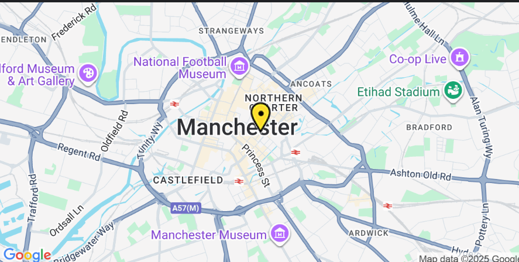

Contact & T&Cs
This page shows how customers and partners could contact Don Pollo Grill and outlines simple terms for using this demo website.
Contact Details
For enquiries about this project or my work as a student developer, you can contact me at:
Email: E.Fofana@edu.salford.ac.uk
Find Us (Fictional Location)
Don Pollo Grill is imagined as being close to Manchester Piccadilly, making it easy to reach by train, tram or bus. Click the map below to open the area in Google Maps.
DON Pollo Grill Location
FAQ – Demo Website
Is Don Pollo Grill a real restaurant?
No – Don Pollo Grill is a fictional brand created for a university web app development project.
Can I place real orders through this website?
No. The menu and order estimator are prototypes only. Prices, items and totals are examples for learning.
What was the purpose of building this site?
The site was designed to show how a small restaurant could use web technologies for online ordering, customer feedback and branding, while helping me practise HTML, CSS, JavaScript and project documentation.
Who built this website?
This website was built by Enoch Fofana, a Business Management with Innovation & Technology student at the University of Salford, as part of the Web App Development module.
Connect With Me
You can view my professional profile and connect with me on LinkedIn:
 Visit my LinkedIn Profile
Visit my LinkedIn Profile